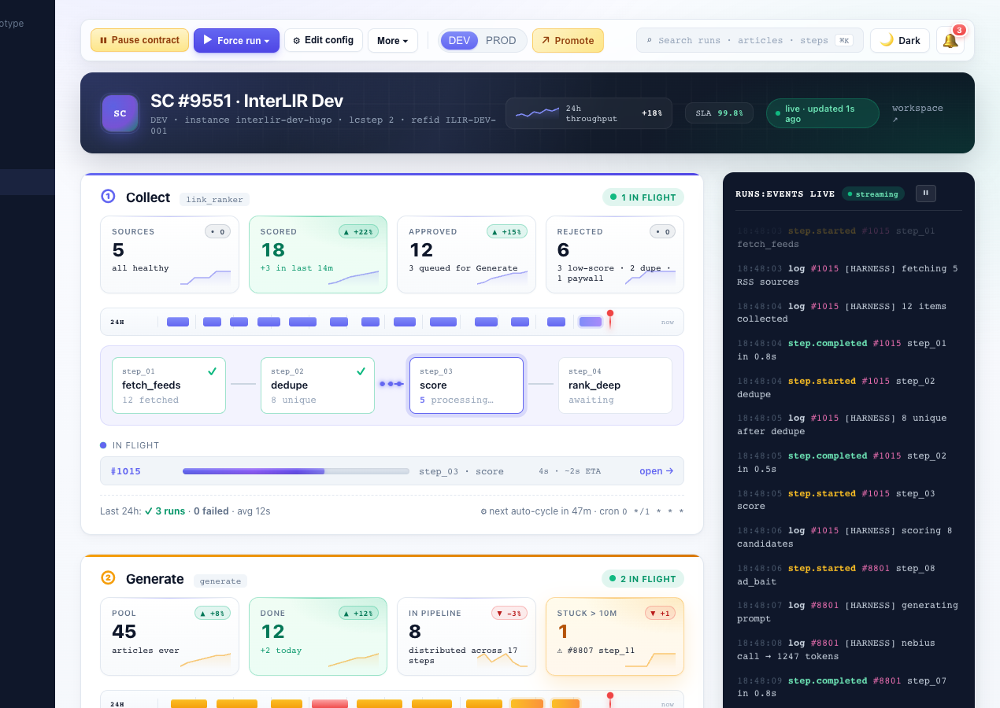

Half of B2B buyers now start vendor research in an AI chatbot. Are you in the answer?
Enterium measures where your company appears — and disappears — when buyers ask ChatGPT and Perplexity about your category. Then we run the grounded, verified, measured content operation that puts you on the shortlist.

The shift, in primary sources
The shortlist now happens before you know there's a deal.
84% of B2B CMOs now use AI for vendor discovery — up from 24% a year ago.
WYNTER, 2026
51% of B2B buyers now start research in an AI chatbot — AI chat is the #1 shortlist influence.
G2, 2026
68% of Google searches now end without a click; position-1 CTR is down 58% on AI-Overview keywords.
SPARKTORO / SIMILARWEB, 2026 · AHREFS, 2026
Google still sends 190× more traffic to websites than ChatGPT. We optimize for the shortlist, not against Google.
AHREFS, 2026
Your buyers still buy from humans. But the list of humans they talk to is increasingly written by a machine. If you're not in the answer, you're not in the deal. You'll never know the deal existed.
The machine behind the service
Collect, rank, rewrite, verify, publish, measure.
Enterium is a content-operations platform we run on our own network of niche sites first. The audit is done by people; the execution engine behind the plan is ours.
Collect
We sweep thousands of sources and extract the full text of what matters in a niche.
Rank
Every piece is read for meaning and scored against the niche corpus. Only the strongest signal survives triage.
Rewrite
Each story is researched and written as an original article — not summarized, not spun — grounded in retrieved facts with provenance.
Verify
Deterministic gates check every claim against the sources: fabrication, relevance, duplication, brand safety. What can't be grounded doesn't publish.
Publish
Straight to the sites it belongs on — ours or yours — formatted, referenced, linked.
Measure
Search impressions, rankings, crawler behavior, and AI citations, tracked over time. The results feed back into what we research next.
Why this isn't another dashboard
Tools measure. Agencies promise. We execute.
Grounded, or it doesn't ship
Every factual claim in every article is tied to a retrieved source in a verification ledger. Fabrication rate is down 52% since we started measuring it — and you can audit the ledger.
Done for you, end to end
Not another scoreboard. We research, write, verify, publish, and measure — your team reviews outcomes, not dashboards. The trackers' own users ask for exactly this.
Kill criteria, in writing
Before an engagement starts we agree what failure looks like and when we stop. If the numbers don't move, the engagement ends — that's in the statement of work.
Metered costs, hard switch
Every LLM call is metered at token level with real provider pricing, against a budget with a hard cutoff. No credits, no surprise invoices — the machine physically can't produce one.
No testimonials. Live numbers instead.
AI engines read our network before Google does.
Measured in Cloudflare over 30 days on our own anchor site: ClaudeBot and GPTBot out-crawl Googlebot 5.6 to 1. Crawl is potential, not traffic — but citation starts with being read.
We sell the shortlist moment and a method you can inspect — not traffic promises. How we work →
The AI-Visibility Audit
Fixed scope. Fixed price. Two weeks.
- Citation baseline. The prompts your buyers actually ask, across ChatGPT, Perplexity, and Google AI Overviews — where you appear, where competitors appear, what the answers cite. Reproducibly: same prompts, multiple runs, documented variance.
- Source map. Which publications, communities, and pages feed the answers in your category — and what it takes to be among them. Up to 85% of AI visibility comes from content you don't own.
- Content gap report. The specific questions AI can't answer about you — because the grounded, citable content doesn't exist yet.
- The 90-day execution plan. What to publish, where to be mentioned, what to fix on-site — sequenced by citation impact, with the metrics we'll use to prove it worked.
FIXED · TWO WEEKS · USD · CREDITED AGAINST EXECUTION IF YOU CONTINUE
No credits, no auto-renewing anything. If you continue with us, the audit fee credits against the first month of execution.
OR START FREE: GET THE SNAPSHOT →
Start with the truth about your category
Find out what AI tells your buyers about you.
Start free with a 48-hour snapshot, or go straight to the fixed-scope audit: a citation baseline, a source map, and a 90-day execution plan, with us or without us.
FIXED SCOPE IN WRITING BEFORE YOU PAY · KILL CRITERIA INCLUDED